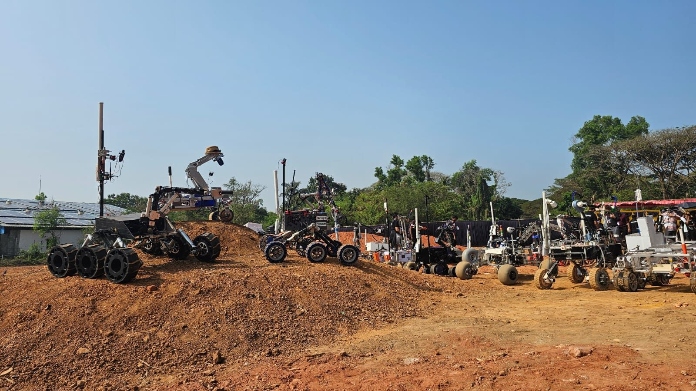

Research Projects
Publications →
Uncertainty-Calibrated Transonic Flutter-Boundary Prediction
An actively-sampled reduced-order model: a p–k/Theodorsen baseline and coupled SU2 fluid–structure interaction feed a Gaussian-process operator with split-conformal calibration. Reproduces the AGARD 445.6 flutter speed index within ~12% and the Isogai Case-A transonic dip, converging the boundary in materially fewer solves than random sampling.

Critical-Layer Instability of Structural-Acoustic Wall Modes in a Two-Flexible-Plate Channel
Closed-form O(M) corrections to every coupled branch via asymptotics in the fluid-loading parameter (Pridmore–Brown equation with plate-admittance boundaries), the critical-layer threshold Mcrit = Ω/ξ, and parity-protected absorption of wall modes. Three independent numerical methods agree to ~1 part in 109.

Rapid Aerodynamic Optimization of Engine Nacelles
Class Shape Transformation (Kulfan) parameterisation of the nacelle lip and cowl coupled to an in-house viscous–potential solver and an automated lip-morphing optimiser; localises drag minima and incipient separation at a fraction of RANS cost.
Joint Optimisation of Active Aerodynamics and Electric Energy Deployment in 2026 Formula One
Minimum-time optimal control of a qualifying lap that co-schedules active-aero mode with 350 kW MGU-K deploy/harvest under the regulatory rampdown, solved by CasADi/IPOPT direct collocation over a free racing line. Calibrated, the model matches real 2026 pole times to within 0.17%.
RANS-Verified Surrogate Design of Wing Sections for a uSTOL Aircraft
An inverse-design pipeline showing that training-data generation, not surrogate architecture, dominates design quality: a physics-regularised CST fit of the UIUC corpus, an NSGA-II Reynolds-envelope data engine and a Reynolds-conditioned PointNet++ surrogate. Collapses the generalisation gap from 9.8× to 1.4× and improves L/D by 15.4% over a Bézier-GAN baseline, verified with SU2 RANS.

Frequency-Domain Analysis of Thermoacoustic Coupling in Liquid-Propellant Rocket Engines
An axisymmetric Helmholtz model swept over the ignition band, with Rayleigh-criterion mitigation by spatially decoupling pressure antinodes from the heat-release zone: a fast geometry and damping screen ahead of coupled reacting-flow simulation.

3D-Printed Rotary Cam Switch for Steering-Mode Transitions in a 4WIS Rover
A low-cost state-transition mechanism for a four-wheel independent steer-by-wire rover: a 3D-printed rotary cam switch and encoder reliably switch between zero-radius pivot and Ackermann modes, tested on an autonomous rover.
Continuous-Wave Rotor Pressure Exchanger for Supercritical CO2 Cycles
Experimental study of transient pressure-wave management in rotor channels for direct-contact pressure exchange, achieving a 49% increase in isentropic efficiency over conventional rotary-blade designs with reduced mixing losses.

Conjugate Thermal Management of a Liquid-Cooled 14S4P Battery Pack
A coupled electrochemical–thermal model with an Arrhenius ageing law, holding the temperature rise below ~8 °C with no hotspots and state of health above 0.80 under continuous discharge.